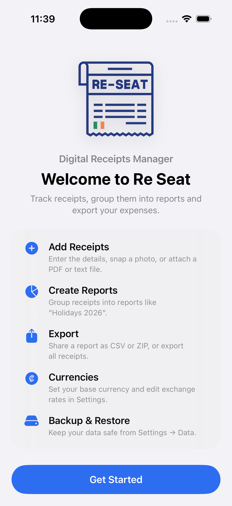
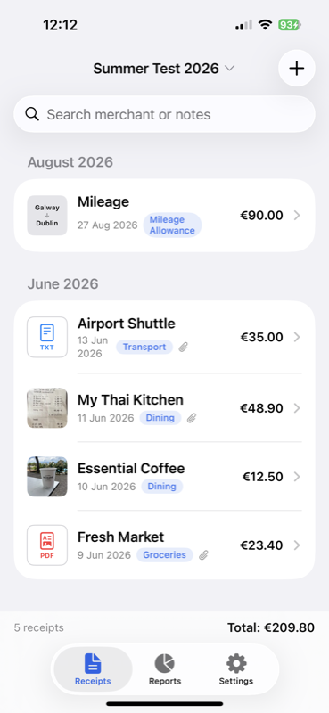

Getting started
- First launch asks for your Name and an optional Reference Number. Your name is appended to reports and exports.
- The welcome page shows a quick overview of the app. Tap Get Started to open the three main tabs: Receipts, Reports and Settings.

You can reopen the welcome page any time from Settings → About → Show Startup Screen, and read this guide in-app from Settings → About → User Guide.
Adding a receipt
Tap + on the Receipts tab and fill in:
- Merchant — who you paid
- Amount and Currency
- Tax (optional) — VAT or sales tax; the scan can fill it in
- Category — Dining, Transport, Lodging, Mileage Allowance, etc.
- Date
- Report — the report this receipt belongs to (optional). The app remembers your last choice.
- Notes — anything else
Mileage Allowance
Choose Category → Mileage Allowance to log travel:
- Enter From and Destination
- Enter the Distance and pick km or miles
- Enter the Rate per unit (e.g. €0.45/mile)
- The Total is calculated automatically
The last-used rate and unit are remembered and prefilled for your next mileage receipt.
Photos and files
- Scan with Camera — Apple's document scanner: point the camera at the receipt and it auto-detects the edges, crops and straightens it automatically.
- Choose from Library or Take Photo to attach a photo of the paper receipt.
- Attach PDF or Text File to add a digital receipt (up to 20 MB).
- Photos are stored in the database, automatically resized (max 2000 px) to keep the app small and fast. Photos added by older versions are compressed automatically once.
- Large PDFs: when you attach a PDF over 400 KB, the app asks whether to Compress it (smaller file, but text becomes an image) or Keep Original.
Scan a receipt (OCR)
- Attach or take a photo.
- Tap Scan Receipt.
- The app reads the photo on your device and fills in the merchant, amount, tax, currency and date — plus the merchant's phone number in Notes, if one is printed.
- Check the filled values and tap Save.
Scanning never sends anything to a server. It only fills fields you left empty, and everything stays editable.
Viewing receipts
Tap any receipt to see:
- Details — merchant, date, category, amount, tax, report
- Notes
- Receipt File — attached PDF or text file, shown inline (tap to open full screen)
- Photo — tap to zoom (pinch and pan, double-tap to reset)


In the list:
- A red PDF badge or blue TXT badge marks receipts with attached files
- Mileage receipts show their From → Destination on the thumbnail
- The Filter button at the top lets you show all reports, one report, or unassigned receipts
- A running total for the current filter is shown at the bottom
Reports
- On the Reports tab, tap + to create a report (name, optional date range, notes).
- Assign receipts to a report when adding or editing them.
- A report shows its total, a per-category breakdown, and its receipts, together with your Name and Reference Number.
- Export CSV — the report as a spreadsheet (your name and reference are included at the top).
- Export ZIP — the CSV plus every attached PDF/text file and photo in the report.
- Export and backup filenames include your name.
Settings at a glance
- Currencies & Exchange Rates — base currency and all exchange rates
- Categories — add, delete and review your receipt categories
- Security — the app lock (Face ID / Touch ID)
- Data — backup, restore, reset and delete
- About — user guide, terms of use and database information
Currencies & exchange rates
- Base Currency is what all totals are converted into.
- Tap a rate and type a new number, then tap the green ✓ to save.
- Tap a currency name to rename it, or add new currencies with Add Currency.
Categories are managed in Settings → Categories (add new ones, or delete unused ones).
Backup & restore
- Backup Database — saves everything (receipts, photos, files) to a single
.zipfile you can keep in Files, iCloud or send by email. - Restore from Backup… — replaces the current data with a backup file. Type
RESTOREto confirm. - Reset Database — replaces everything with the bundled demo data (type
RESET). - Delete All Data… — permanently erases the whole database and restarts the app fresh. The app recommends creating a backup first, and you must type
DELETEto confirm.
Security & privacy
- App lock: turn on Require Face ID / Touch ID in Settings → Security. Re-Seat locks whenever you leave the app, and unlocks with Face ID, Touch ID or your device passcode.
- App switcher privacy: the contents of Re-Seat are hidden in the iOS app switcher, so your receipts never show in the app snapshot.
- Terms & Privacy: read them any time in Settings → About → Terms of Use / Privacy Policy.
Deleting safely
- Receipts: swipe left → Delete → confirm. You can tap Undo for a few seconds afterwards.
- Reports: delete a report only (receipts are kept, unassigned), or delete the report and its receipts. You must type the report name — and for the second option also "I Agree" — before the button enables.
Privacy
- All data (receipts, photos, PDFs, text files, your name) lives in one SQLite database on your iPhone.
- Re-Seat's database engine is SQLite (public domain) — thanks to the SQLite team for their amazing work.
- OCR scanning uses Apple's on-device text recognition — no network, no accounts, no tracking.
- Your backup file is yours; the app never uploads anything.
© Re-Seat v1.5